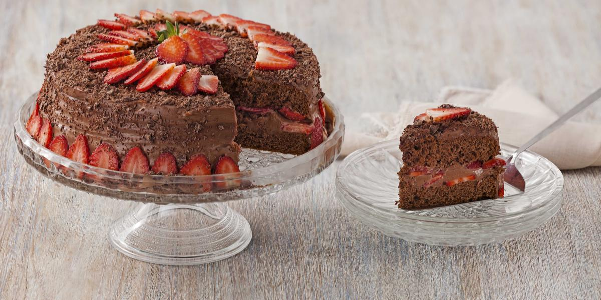

Bolo de Chocolate com Morangos

Ingredientes:
Massa:
Recheio e Cobertura:
Modo de Preparo:
Massa:
- Em uma batedeira, bata os ovos até dobrar de volume, acrescente o açúcar e bata bem.
- Desligue a batedeira, misture aos poucos e delicadamente a farinha de trigo, o Chocolate em Pó e o fermento em pó peneirados.
Recheio e Cobertura:
- Separe alguns morangos para a decoração, corte em fatias o restante e reserve.
- Em uma panela, coloque o Leite condensado, o Leite em pó e o amido de milho e leve ao fogo médio, mexendo sempre até engrossar.
- Retire do fogo, acrescente metade do Chocolate NESTLÉ CLASSIC e misture delicadamente até o Chocolate derreter e incorporar ao creme.
- Acrescente o NESTLÉ Creme de Leite e misture até ficar homogêneo.
- Com uma faca serrilhada, corte a massa do bolo em duas partes, recheie com metade do creme e com os morangos fatiados, e cubra com o restante do creme.
- Decore com o restante do Chocolate NESTLÉ CLASSIC ralado em ralo grosso e com os morangos inteiros reservados.
Informações Adicionais:
- Total: 95 min | Preparação: 15 min | Cozimento: 65 min | Servir: 15 min
- Porções: 15
- Dica: Pare umedecer o bolo, utilize 2 colheres (sopa) do creme pronto, diluído em 1 xícara (chá) de leite com 1 colher (sopa) de conhaque.